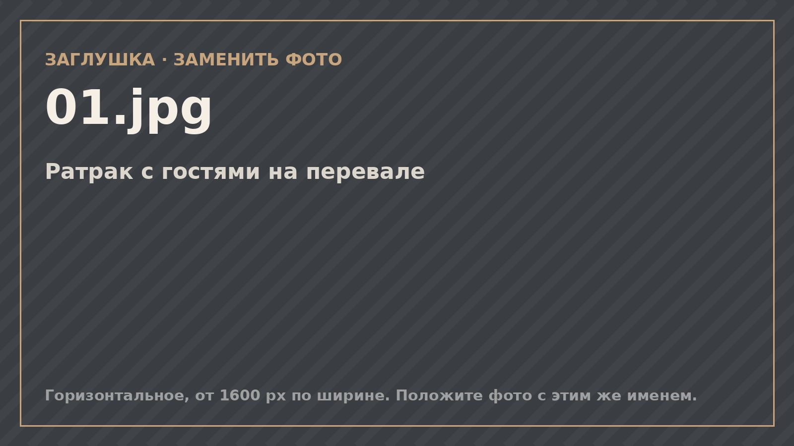
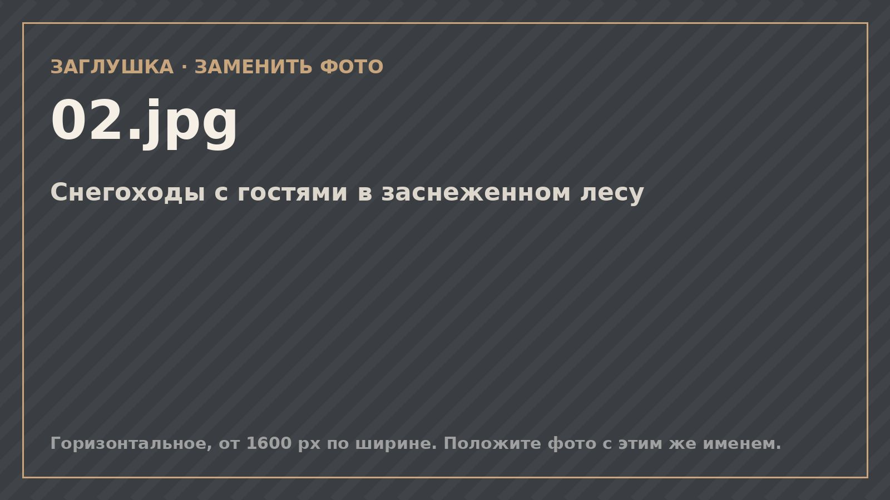
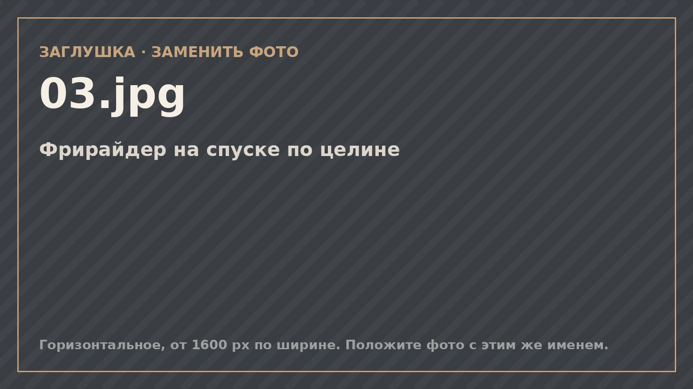
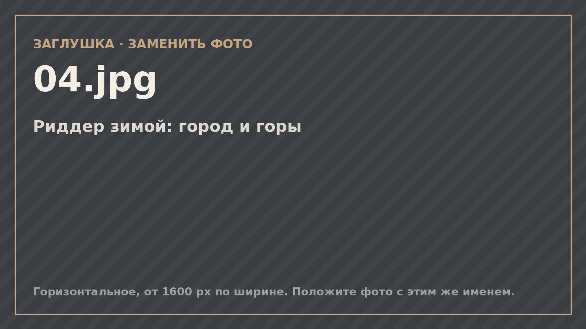

In summer, East Kazakhstan is jeep tracks, high lakes and the road to Belukha. In winter, the mountains around Ridder close to cars and open to snowcats and snowmobiles. Passes and ridges that take half a day to reach on foot in summer are a short drive away on tracks. Here is what you can do, what it costs and how to plan it.
Snowcat trips — no skiing needed

A snowcat is a tracked vehicle built for deep snow. Ours carries up to 12 guests in a climate-controlled cabin. The trip climbs 10–15 km to a pass at about 2,000 m, with stops at viewpoints. At the top there are tables, a grill, lunch and hot tea. The whole outing from Ridder takes 5–6 hours, about four of them in the mountains.
It costs from 60,000 KZT per person in a group of 10–12. A private snowcat for your own group is priced on request.
Snowmobile tours

The same route, by snowmobile: two guests per machine, driven by our guides, groups of 2–6. The climb is faster and there is time for extra stops. From 80,000 KZT per person in a group of 4–6.
Both trips include the vehicles and fuel, the guide and drivers, the transfer from Ridder to the start and back, lunch at the top and gear at no extra cost. The season opens on 10 December, once the snow is down. New Year dates book out first.
Freeride

If you ski or snowboard, Ridder has freeride from mid-November to mid-April. Drop-offs are by utility snowmobile (8–10 runs a day) or by a Formatic-350 snowcat (5–8 runs a day). Tours are all-inclusive: three riding days and four nights at a base outside town, with meals, guide, avalanche gear and banya. Prices start at 370,000 KZT. Read more in our guide to freeride in Kazakhstan.
Getting there and staying
Fly into Ust-Kamenogorsk (Oskemen, UKK) via Almaty or Astana. Ridder is about two hours by road. We pick you up at the airport, book your accommodation in Ridder and drive you to the start each day.

What to wear
Days are spent outside in the cold and at altitude. Dress in layers: thermal underwear, a fleece, a windproof jacket and trousers, warm boots, two pairs of gloves, a hat, a buff or balaclava and sunglasses or goggles.
Planning a summer trip too?
Winter is also when travellers book summer. From late May to October we run 4WD journeys across East Kazakhstan — Katon-Karagay National Park, Lake Markakol, the Old Austrian Road — built around your dates. See summer programs.
Frequently asked questions
What can you do in East Kazakhstan in winter?
Snowcat and snowmobile trips into the Western Altai near Ridder, and freeride tours with snowmobile or snowcat drop-offs.
Do I need to ski for the snowcat trip?
No. The snowcat and snowmobile trips are sightseeing trips into the mountains with lunch at the top.
When does the winter season start?
Snowcat and snowmobile trips run from 10 December. Freeride starts in mid-November, snow permitting.
How do I get to Ridder in winter?
Fly to Ust-Kamenogorsk via Almaty or Astana; Ridder is about two hours by road. We arrange the transfer.